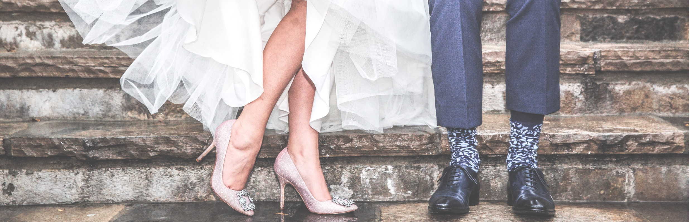

<div id="single-portfolio">
	<div id="portfolio-details" class="container">
		<a class="close-folio-item" href="#"><i class="fa fa-times"></i></a>
		
		<div class="row">
			<div class="col-sm-9">
				<div class="project-info">
					<h3>Can Site Layout Affect E-Commerce?</h3>
					<p>Breaking into the bridal industry is hard, but Anna King was no quiter. This startup, e-commerce site needed to make waves, sell products, and look good while doing it. They brought us on broad to design the landing page for their site, a page they would base the look and feel of the rest their site. They needed conversion and a luxurious feel. Challenge accepted.</p>
					<p>To look luxurious, we optimized the page's white space: think of walking into an Apple store vs. a resale shop. Space communicated value -more space, more value. We used this tactic with the testimonials and social hype sections. To easily convert, we funneled the layout to one end: purchase a product. Using this singular intent helped to unify the action requested from the user and increased the conversions in our user tests.</p>
                    <p>The final design we produced was everything the Anna King team had hoped. It was simple and aesthetically pleasing, providing the platform for the rest of their site.</p>
				</div>
			</div>
			<div class="col-sm-3">
				<div class="project-details">
					<h3>Project Details</h3>
					<p><span>Client: </span>Anna King Bridal</p>
					<p><span>Date:</span> 02 July 2016</p>
					<p><span>Tag:</span> Startup, UI Design, E-Commerce</p>
				</div>  
			</div>
		</div>
	</div>
</div>